NASA Space Apps Challenge 2026 · Abandoned but not Forgotten
They stopped talking.
Their stories didn't.
A free, story-driven website where 49 machines NASA left on the Moon, on Mars and across the solar system tell their own stories, for kids aged 8–14, classrooms and space fans.
agneay-community-hub.github.io/Invictus
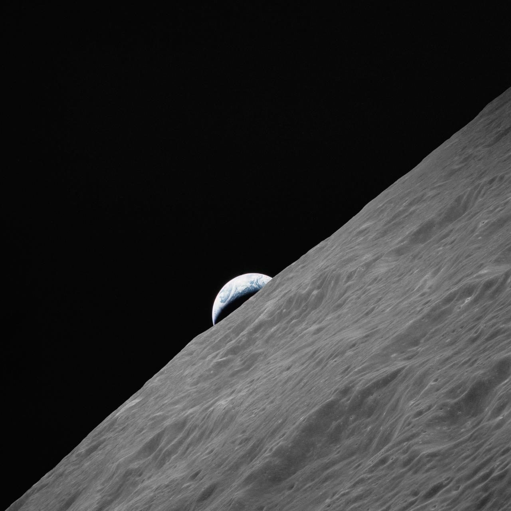
1 / 7Abstract
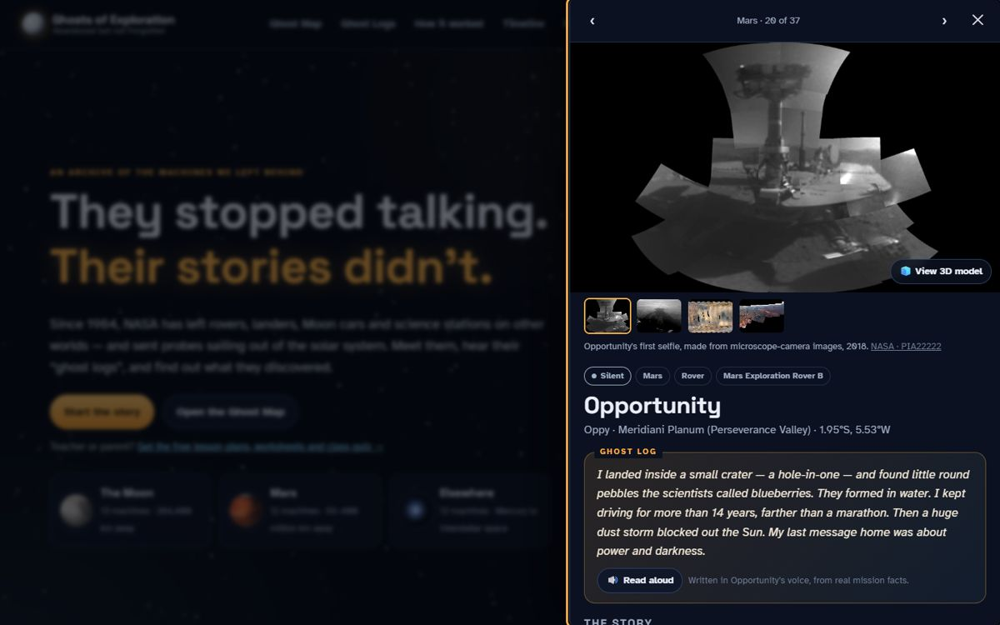
The front door · Echo's journey
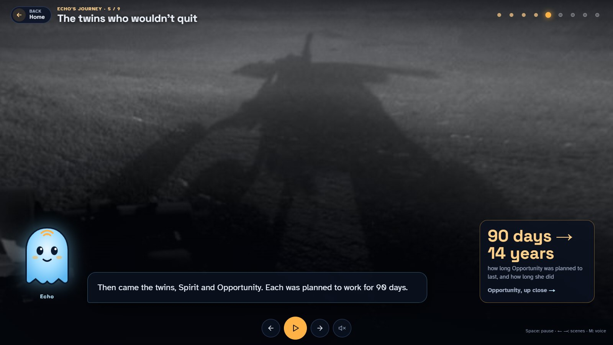
What is already done · 1 of 3 · Explore
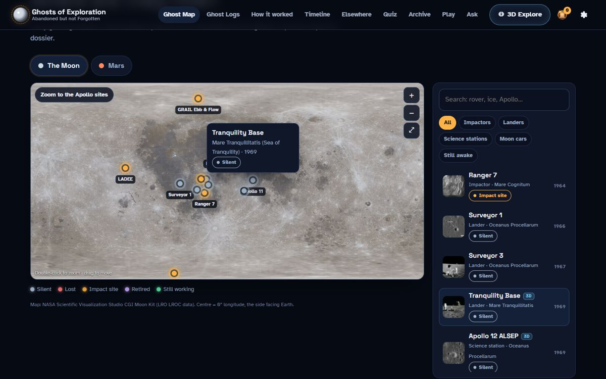
Ghost Map and dossiersEvery machine at its true coordinates, with story, dates, discoveries, photos and NASA sources.
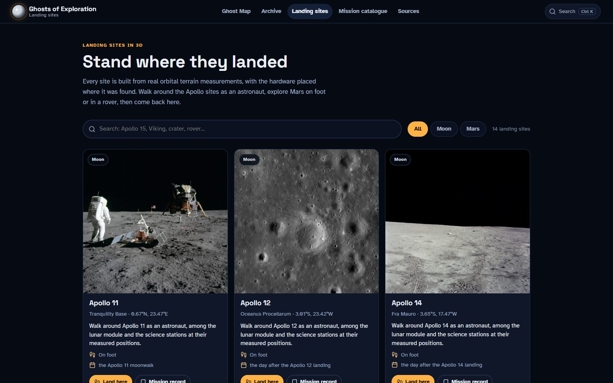
14 landing sites in 3DWalk real Moon and Mars terrain, measured from orbit, and relive whole missions.
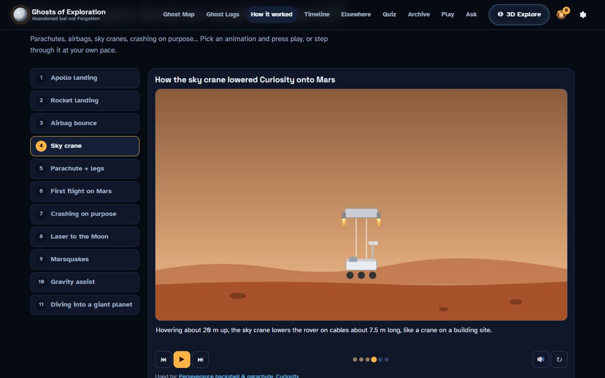
How it worked11 step-by-step animations: airbags, sky cranes, impactors, laser mirrors, quakes.
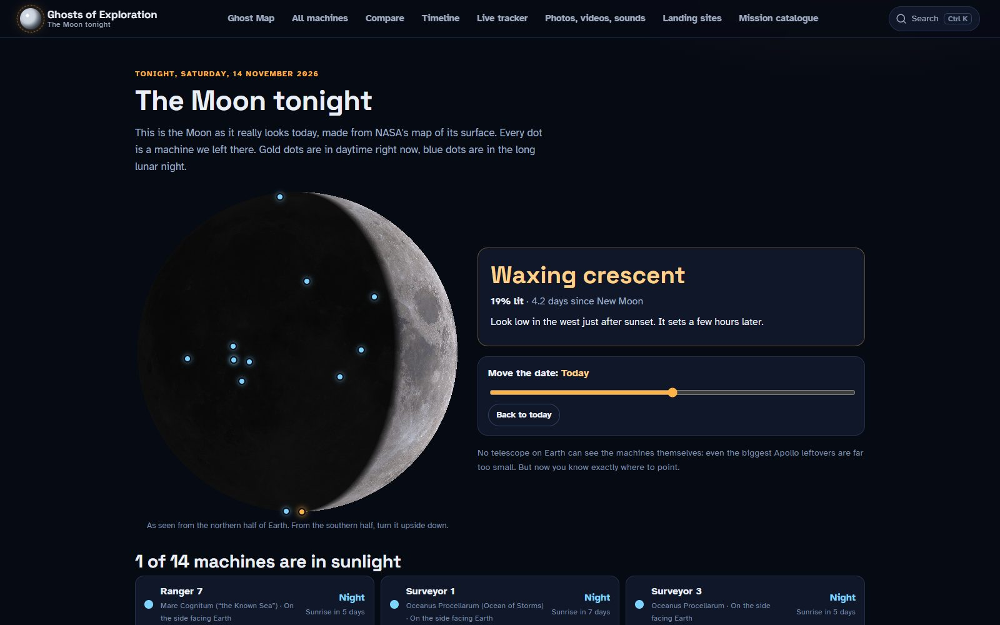
The Moon tonightToday's real Moon phase, and which Apollo sites are in sunlight right now.
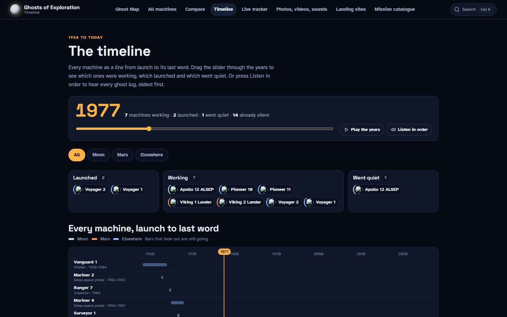
TimelineEvery machine from launch to last word. Drag through the years, or listen in order.
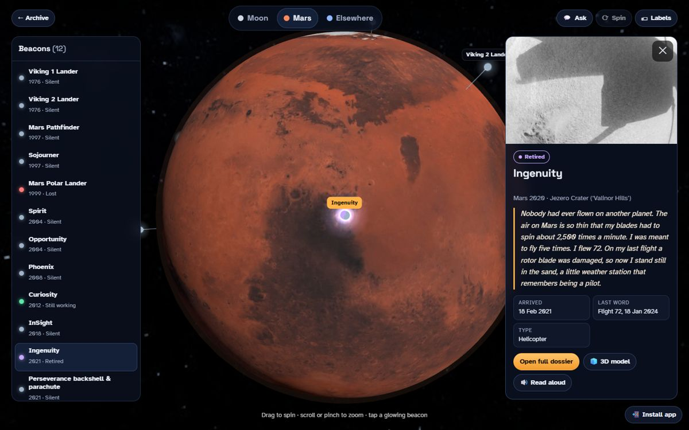
3D, NASA Eyes and a live trackerSpin the worlds, see real spacecraft, and watch Voyager's distance tick up live.
What is already done · 2 of 3 · Stories in every format
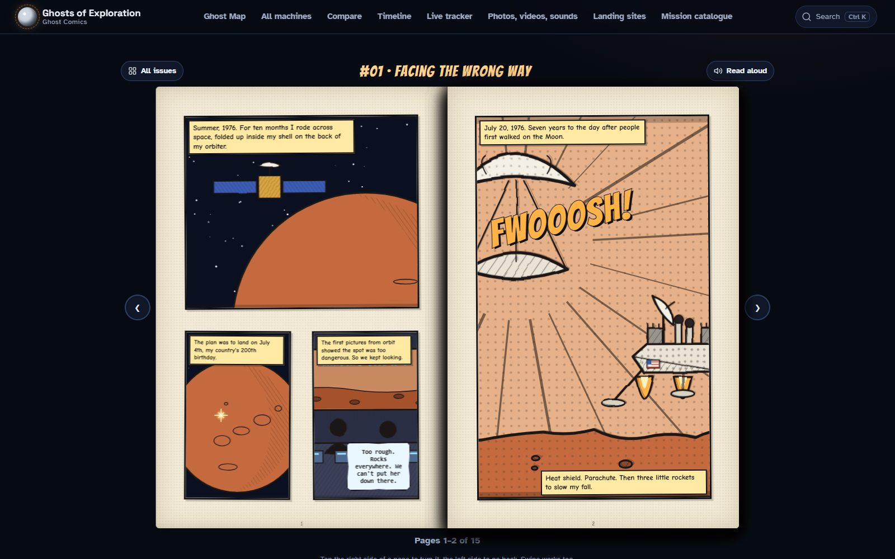
Ghost ComicsA flip-book comic for all 49 machines. Issue #1: Viking 1, “Facing the Wrong Way”.
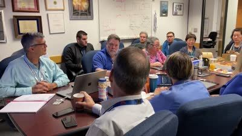
Ghost Logs podcast85 episodes: six seasons told by instruments, plus an episode for every machine.
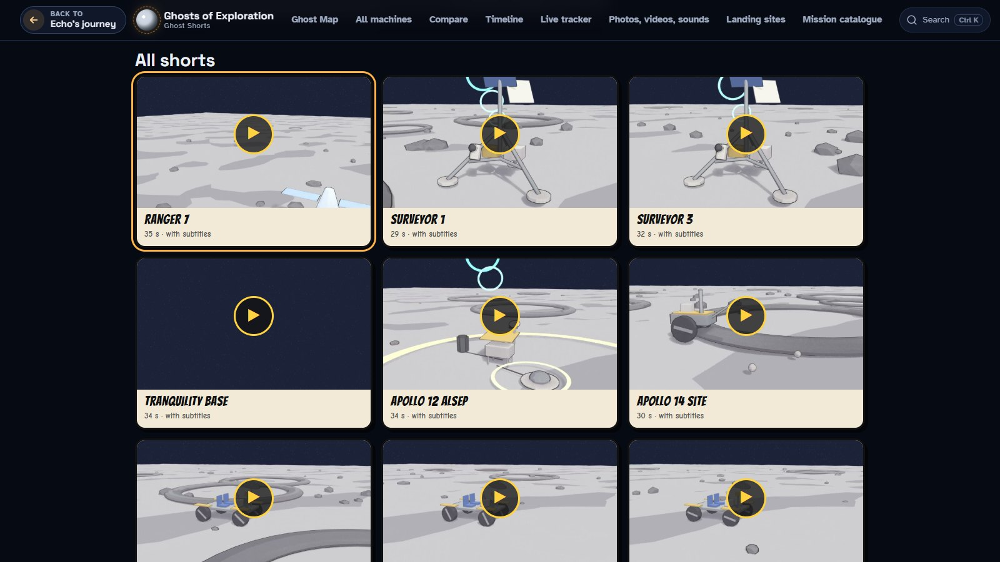
Ghost Shorts: all 49A cartoon for every machine, narrated with its ghost log, with subtitles.
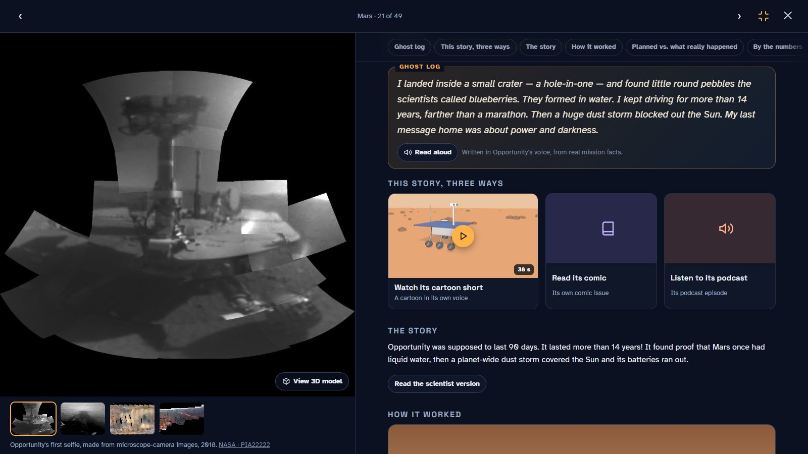
This story, three waysEvery dossier links its cartoon, comic and podcast, with a full-screen reading mode.
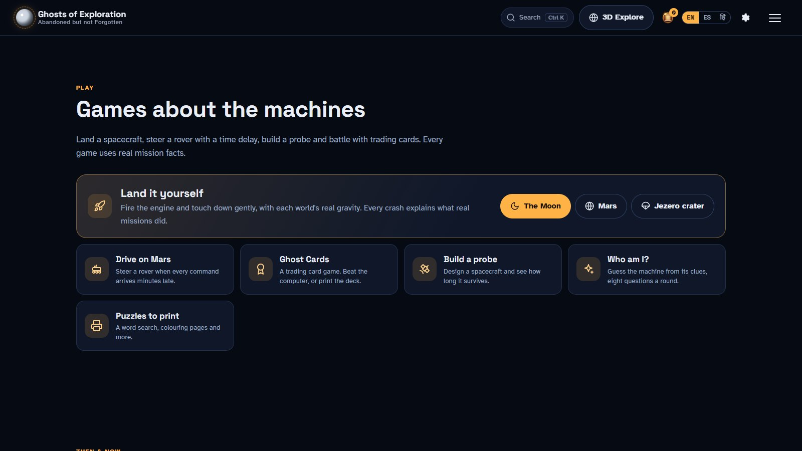
Play: every gameLand with real gravity, drive with signal delay, build a probe, Ghost Cards and the quiz.
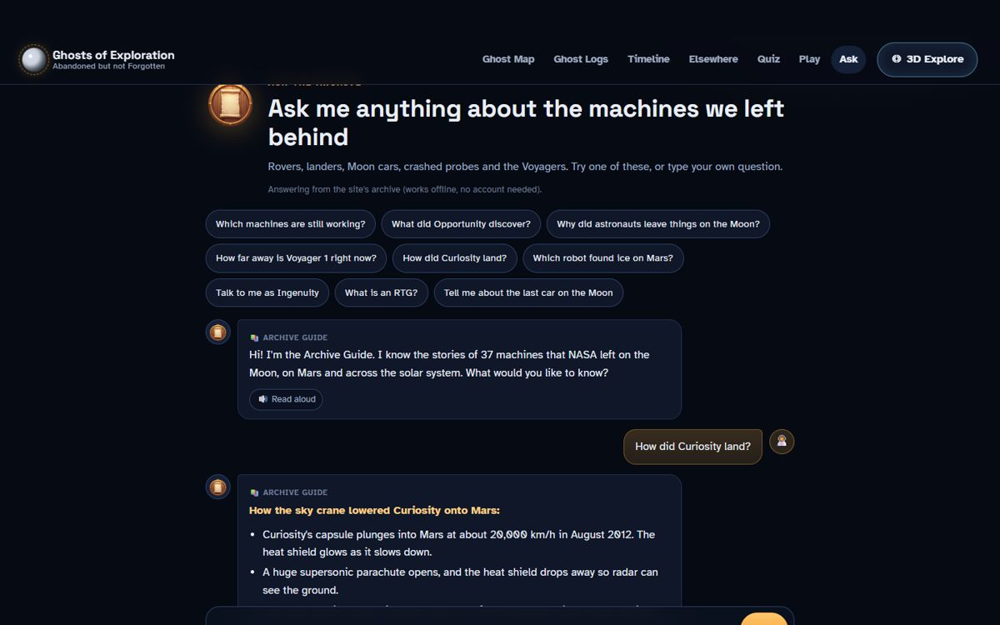
Ask the ArchiveQuestions answered from the archive, offline, with an optional AI guide.
What is already done · 3 of 3 · Learning for everyone
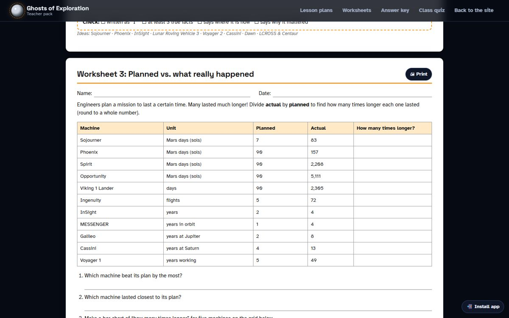
Impact
Kids leave knowing that every mission ends, that the machines are still out there, and that today's discoveries were built on theirs. Teachers get a ready-made, sourced, free resource that works in any classroom, starting with a 5-minute story anyone can follow.
agneay-community-hub.github.io/Invictus
Photos and data: NASA (public domain). NASA does not endorse this project.
7 / 7